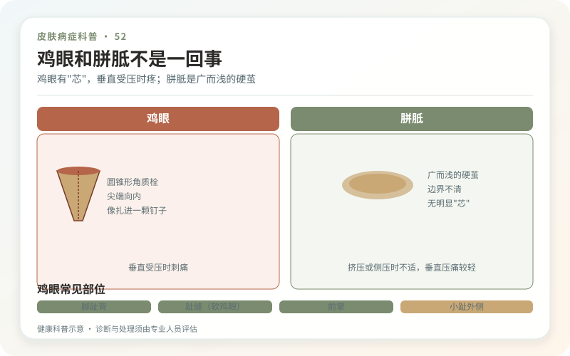
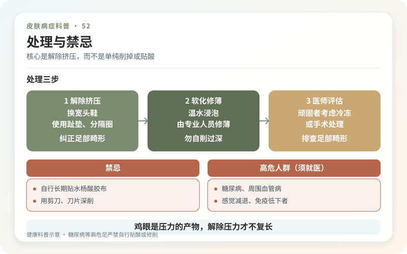

鸡眼是皮肤在一个小范围内长期受压后形成的圆锥形角质栓，尖端向内压迫神经，所以踩地或鞋子挤压时像被针顶住。硬鸡眼常在脚趾背、前掌，软鸡眼常在趾缝，因为潮湿而发白、柔软，却同样疼。
所谓“鸡眼芯”不是会繁殖的根，更不是虫。把角栓挖掉后，如果鞋头、脚趾畸形和步态压力仍在，新的角质会再次形成。

鸡眼和跖疣，治法为什么不同？
鸡眼常位于明确受压点，皮纹可延续，垂直按压更痛；跖疣由HPV相关，常打断皮纹，修薄后可见黑点或点状出血，侧向挤压可能更痛。胼胝则面积更宽，没有集中硬芯。
自削会破坏这些线索。反复治疗不愈、出血、快速长大或外观不典型时，应让皮肤科或足病专业人员确认，必要时排除异物和肿瘤。

第一治疗不是药，而是解除压力
更换前掌和鞋头空间合适的鞋，减少高跟和局部挤压；根据鸡眼位置使用合适的趾间垫、保护圈或鞋垫。脚趾畸形、骨性突起和拇外翻明显时，可进一步接受足踝评估。保护垫位置放错也可能制造新压力，最好在专业指导下调整。
专业修薄角栓能较快减痛，但只解决当下。含水杨酸的鸡眼膏可软化角质，必须精准贴在鸡眼上，保护周围正常皮肤，并严格按说明。皮肤已经破损、感染或循环感觉异常时不适合自行使用。
这些人不要自己贴鸡眼膏
糖尿病、外周血管病、足部麻木、免疫抑制，以及既往有足溃疡者，应先由医生评估。感觉差的人可能不知道已经被药物灼伤，循环差则让小伤口发展为感染和坏死。
红肿热痛、流脓、恶臭、发热，或皮肤发黑、发凉，需要及时就医。不要等“鸡眼熟了自己掉”。
能不能手术永不复发？
单纯切除角质不改变压力。若结构性畸形持续造成严重疼痛，足踝外科可能讨论纠正骨性原因，但手术有瘢痕、感染、神经损伤和新的受力改变，不是每颗鸡眼的默认答案。
不要用刀片、针、剪刀或火烤，修脚店也不应在不评估血供和糖尿病的情况下深挖。温水短时软化、保湿和合脚鞋可辅助，但泡醋、泡药并不能纠正受力。
鸡眼的高概念叫“压力集中”。把压力摊开，才比不断挖芯更接近根本。
先找压迫源，再处理中央硬芯
鸡眼常位于鞋子和骨突反复挤压的位置，按压时疼，中央有较硬角质芯。记录是哪双鞋、走多久后疼、趾间是否互相摩擦，并检查鞋头宽度和鞋垫磨损。若只把硬芯削掉却继续穿同一双挤脚鞋，复发并不奇怪。合适鞋型、减压垫和必要的力线评估，是治疗的一部分，不是可有可无的售后建议。
鸡眼贴不是所有人的通用答案
含水杨酸的产品可软化角质，但贴偏、贴太久或用于破损皮肤，会灼伤正常组织。面部、黏膜当然不能用；糖尿病、循环不良或足部感觉减退者尤其应避免自行使用。家庭修剪不应见血或引起疼痛，刀片“挖根”既不存在真正的根，还会制造感染入口。疼痛明显时，由专业人员安全减薄并处理压力更合适。
和跖疣分不清时别硬猜
跖疣可能有黑点、皮纹中断，侧向挤压更痛；鸡眼通常保留与受力相关的中央芯，但厚茧和自行处理会模糊线索。突然增大、反复出血、颜色异常、治疗无效，或伴红肿流脓时，应面诊。真正的治愈标准不是当天把角质挖出一个洞，而是伤口安全愈合、走路不痛，并且压力源得到纠正。
趾间软鸡眼需要保持干燥，但别过度塞东西
趾间受挤压和潮湿时，鸡眼可能发白变软。使用合适的趾间分隔或减压材料前，应确认不会把压力推向另一侧，也不会让皮肤更加闷湿。每天检查有没有浸渍、裂口和红肿，分隔物保持清洁干燥。随手塞棉花或硬物可能移位摩擦，反而制造新伤口。
复发时回到鞋和骨性结构
若专业去除后很快在同一点复发，应看鞋楦、足趾畸形、骨突和步态，而不是质疑“没有挖净”。部分人需要定制减压或足踝专科评估，手术只适用于经过选择的结构性问题。每周记录疼痛与步行距离，比拍一张刚削完的照片更能说明疗效。能无痛行走且皮肤完整，才是最重要的结果。
购买鞋时最好在一天中足部略有膨胀的时段试穿，穿常用袜子并走动数分钟。脚趾应有活动空间，鞋内不应在鸡眼处形成明确压点。再好的药，也抵不过每天数千步的重复摩擦；把鞋当作治疗器械的一部分，复发率才可能真正下降。